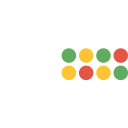

~/tools/anonymizing-networks
Anonymizing Networks
last updated 2026-08-02 · 5 tools · what changed
A VPN moves your trust from your ISP to one company. An anonymizing network is
built so that no single party can link who you are to what you're
doing: your traffic hops through several relays, and each one only
knows its own neighbors.
before you pick
For almost everyone, anonymity means the Tor Browser, used as-is, without
logging into your real accounts. Everything else on this page is for a
more specific job: phones, hidden services, censorship, or experiments.
what actually matters
who sees what
The whole game is preventing any one party from linking your identity to your destination. Judge every design by that question.
the speed tax
Every extra hop adds latency. Tor is fine for browsing and painful for video calls; the other networks trade differently.
exit or internal
Tor is built to reach the normal web through exit relays. I2P and Lokinet mostly serve destinations inside their own networks.
crowd size
Anonymity loves company. A big, ordinary user base means the network says little about you; a tiny one makes you stand out.
the tools

Tor
the default pick
onion-routednonprofitopen sourcefree
Tor is the anonymizing network, run by a nonprofit and studied
by more researchers than every alternative combined. Each connection builds a
three-hop circuit (guard, middle, exit) through thousands of volunteer relays,
and no single relay learns both who you are and where you're going. The right
way to use it is the Tor Browser.
good
- No single relay can link you to your destination
- The Tor Browser normalizes your fingerprint so you blend in with every other Tor user
- Arti, the Rust reimplementation, now ships with congestion control on by default
- WebTunnel bridges disguise Tor traffic as ordinary HTTPS where it's blocked
mind the
- Slow: fine for browsing, painful for calls and video
- Some sites block or captcha exit traffic
- Logging in to a real account de-anonymizes you instantly, Tor or not
Orbot
the mobile pick
onion-routedopen sourcefree
Orbot puts Tor on your phone. On Android it runs as a local VPN and routes
selected apps, or the whole device, through the Tor network, so it covers apps
that have no proxy settings of their own. Guardian Project
maintains both the Android and iOS versions and ships regular releases.
good
- Per-app routing on Android covers apps with no proxy settings of their own
- Whole-device mode when you want everything torified
- Actively maintained on both platforms
mind the
- iOS is system-wide only: Apple's platform restrictions rule out per-app selection
- There's no Tor Browser for iOS at all (Apple requires WebKit), so Orbot carries more of the load there
- On Android, browse in Tor Browser and leave Orbot to the rest

I2P
the internal network
onion-routedopen sourcefree
I2P is a network turned inward. Where Tor is mostly a private path to the
normal web, I2P is designed for services hosted inside the network
itself (called eepsites), and every participant relays traffic for
others.
good
- Handles long-lived connections and torrenting better than Tor
- Java I2P bundles a real torrent client (I2PSnark), mail, and IRC
- i2pd gives you a lightweight C++ router for a VPS or a Raspberry Pi
mind the
- Clearnet browsing is the weak spot: exits to the normal web (outproxies) are scarce
- Java I2P wants a few hundred megabytes of RAM
- i2pd bundles no apps: you pair it with external torrent or mail software
Snowflake
the censorship bridge
free
Snowflake isn't a separate network; it's a bridge into Tor for
people whose ISPs or governments block it. Traffic to blocked Tor entry points
gets disguised as ordinary video-call (WebRTC) traffic and relayed through
volunteers' browsers.
good
- Still actively recommended in the Tor Project's own circumvention guide
- Looks like ordinary video-call traffic on the wire
- You can run a proxy in a browser tab and help someone else get through
mind the
- Only useful when Tor itself is blocked; otherwise plain Tor Browser is simpler
- Not the answer everywhere: Tor's guide matches bridge types to regions, and sometimes that's WebTunnel instead
- You still get Tor's speed, since everything ends up on the Tor network anyway
Lokinet
the experimental pick
onion-routedopen sourcefree
Lokinet does onion routing at the network layer instead of per application, so
in principle any protocol can ride it. Development now sits
with the Session Technology Foundation (formerly the Oxen project). It's one
to watch, not the default.
good
- Network-layer design: any protocol can ride it, not just a browser
- An active organization behind it, with recent releases and updated bootstrap infrastructure
- Being integrated into the Session messenger as its transport layer
- The standalone client stays live and installable on its own
mind the
- Far less studied than Tor, with a far smaller crowd to blend into
- Clearnet exits are limited
- The May 2025 move to the Session Network model is a real reorganization, and recent
at a glance
relay and instance counts move daily; pull them from the projects' own pages when it matters.
worth knowing
Tor Browser, not Tor in your browser. Use the official
Tor Browser instead of pointing a regular browser
at the network. Half the job is the normalized fingerprint, and only the
official browser gives you that.
Skip the VPN-plus-Tor layering debate. For most people, plain
Tor Browser is the right call; adding a VPN under or
over it rarely helps and can make things worse; the Tor Project's own guidance
says to skip the combination unless you really know what you're doing. If Tor
itself is blocked where you are, use a bridge like Snowflake or WebTunnel
instead.
Don't log in. Signing in to your real accounts over Tor
de-anonymizes you to those services instantly. Anonymity is a separate
identity, not a cloak over your existing one; your
threat model decides whether you need it
at all.